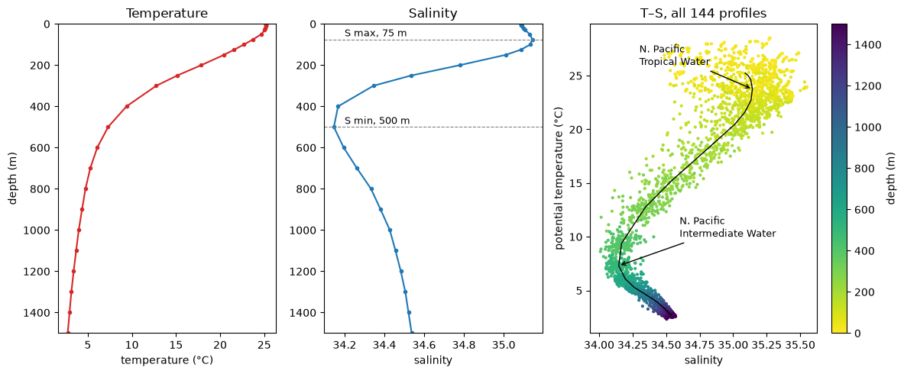

%pip install -q "icechunk>=2.3" "xarray>=2026.7" "zarr>=3.4" matplotlibPacIOOS: seasons and water masses at Station ALOHA

Two textbook pictures of the open ocean north of Oʻahu, from the PacIOOS ROMS Hawaiʻi reanalysis (3-hourly, 2009–2020, ~4 km, 36 depth levels) as a virtual Icechunk store:
- how deep the seasonal cycle reaches, and
- the water masses in the temperature and salinity profiles.
The point is Station ALOHA (22.75 °N, 158 °W), where the Hawaii Ocean Time-series has sampled monthly since 1988. No credentials needed. Runs on Google Colab (Python 3.12).
Open the dataset
The store holds only metadata; every value is read by byte range from the NetCDF files on Source Cooperative. chunks=None keeps it lazy until we select.
import icechunk, xarray as xr, zarr
import numpy as np, matplotlib.pyplot as plt
zarr.config.set({"async.concurrency": 128}) # many small chunks: read lots at once
url = "https://data.source.coop/ocean-icechunks/pacioos/roms_hiig_reanalysis/icechunk"
repo = icechunk.Repository.open(icechunk.http_storage(url))
# Authorize anonymous reads of the NetCDF files, where the data actually live.
auth = {p: icechunk.credentials.HttpAccess for p in repo.config.virtual_chunk_containers}
repo = repo.reopen(authorize_virtual_chunk_access=auth)
ds = xr.open_zarr(repo.readonly_session(tag="v2.0").store, consolidated=False, chunks=None)
ds<xarray.Dataset> Size: 1TB
Dimensions: (lat: 195, lon: 295, time: 35040, depth: 36)
Coordinates:
* lat (lat) float32 780B 17.02 17.05 17.09 17.13 ... 23.91 23.95 23.98
* lon (lon) float32 1kB -163.8 -163.8 -163.8 ... -152.6 -152.6 -152.5
* time (time) datetime64[ns] 280kB 2009-01-01 ... 2020-12-28T21:00:00
* depth (depth) float32 144B 0.25 1.0 2.0 5.0 ... 4.5e+03 5e+03 5.5e+03
Data variables:
mask (lat, lon) int16 115kB ...
u (time, depth, lat, lon) float32 290GB ...
salt (time, depth, lat, lon) float32 290GB ...
zeta (time, lat, lon) float32 8GB ...
v (time, depth, lat, lon) float32 290GB ...
temp (time, depth, lat, lon) float32 290GB ...
Attributes: (12/54)
acknowledgement: The Pacific Islands Ocean Observing System (P...
comment: Model runs produced by Brian Powell (powellb@...
Conventions: CF-1.6, ACDD-1.3
creator_email: powellb@hawaii.edu
creator_institution: University of Hawaii at Manoa
creator_name: Brian S. Powell
... ...
summary: Regional Ocean Modeling System (ROMS) 3-hourl...
time_coverage_resolution: PT3H
title: Regional Ocean Modeling System (ROMS): Main H...
time_coverage_start: 2009-01-01T00:00:00Z
time_coverage_end: 2020-12-28T21:00:00Z
source_files: https://data.source.coop/ocean-icechunks/paci...Nothing has been read yet but metadata, and xarray already knows how much data it can reach:
print(f"Size reported by xarray: {ds.nbytes / 1e12:.2f} TB")Size reported by xarray: 1.17 TBRead profiles at Station ALOHA
One profile per month, 2009–2020: the 15th at 12Z (02:00 in Hawaiʻi, so the afternoon warm skin is not in it), top 1,500 m, temperature and salinity. Each chunk in this store is one depth level at one time step, so this is 144 times × 27 levels × 2 variables ≈ 7,800 reads, about 1.8 GB. That took about 15 s on a JupyterHub in AWS us-west-2.
times = [f"{y}-{m:02d}-15T12" for y in range(2009, 2021) for m in range(1, 13)]
aloha = (ds[["temp", "salt"]]
.sel(lat=22.75, lon=-158.0, method="nearest")
.sel(time=times, depth=slice(0, 1500))
.load())
aloha<xarray.Dataset> Size: 32kB
Dimensions: (time: 144, depth: 27)
Coordinates:
* time (time) datetime64[ns] 1kB 2009-01-15T12:00:00 ... 2020-12-15T12:...
* depth (depth) float32 108B 0.25 1.0 2.0 5.0 ... 1.3e+03 1.4e+03 1.5e+03
lat float32 4B 22.76
lon float32 4B -158.0
Data variables:
temp (time, depth) float32 16kB 23.7 23.7 23.7 ... 3.239 3.043 2.847
salt (time, depth) float32 16kB 35.22 35.22 35.22 ... 34.51 34.53 34.55
Attributes: (12/54)
acknowledgement: The Pacific Islands Ocean Observing System (P...
comment: Model runs produced by Brian Powell (powellb@...
Conventions: CF-1.6, ACDD-1.3
creator_email: powellb@hawaii.edu
creator_institution: University of Hawaii at Manoa
creator_name: Brian S. Powell
... ...
summary: Regional Ocean Modeling System (ROMS) 3-hourl...
time_coverage_resolution: PT3H
title: Regional Ocean Modeling System (ROMS): Main H...
time_coverage_start: 2009-01-01T00:00:00Z
time_coverage_end: 2020-12-28T21:00:00Z
source_files: https://data.source.coop/ocean-icechunks/paci...Seasons reach only the top ~100 m
Sun and wind warm and stir the top of the ocean, so its temperature follows the seasons. Deeper down, the thermocline is shielded from them. Plot temperature at four depths through the 12 years.
fig, ax = plt.subplots(figsize=(10, 4))
aloha.temp.sel(depth=[0.25, 50, 100, 200]).plot.line(ax=ax, x="time", hue="depth")
ax.set(xlabel="", ylabel="temperature (°C)", title="Temperature at Station ALOHA, one profile per month")
plt.show()
The surface swings about 4 °C each year, coolest in March and warmest in September. At 50 m the swing is nearly as large and peaks a month later, as the summer heat is mixed down. At 100 and 200 m the seasonal cycle is only about 1 °C. What you see there instead is irregular: eddies passing ALOHA move the thermocline up and down by tens of metres, which at 200 m changes the temperature by 2–4 °C.
Water masses in the profile
Below the mixed layer, salinity tells you where the water came from:
- a salinity maximum near 75–100 m: North Pacific Tropical Water, salty water formed under the evaporation-dominated subtropical gyre to the northeast, that sinks and spreads south below the surface;
- a salinity minimum near 500 m: North Pacific Intermediate Water, fresh water formed far to the north in the subpolar Pacific.
In a T–S diagram each water mass is a bend in the curve.
mean = aloha.mean("time")
smax = mean.salt.sel(depth=slice(0, 300)).idxmax().item()
smin = mean.salt.sel(depth=slice(300, 1000)).idxmin().item()
fig, (ax1, ax2, ax3) = plt.subplots(1, 3, figsize=(12, 5), gridspec_kw={"width_ratios": [1, 1, 1.3]})
ax1.plot(mean.temp, mean.depth, "o-", color="tab:red", ms=3)
ax1.set(ylim=(1500, 0), xlabel="temperature (°C)", ylabel="depth (m)", title="Temperature")
ax2.plot(mean.salt, mean.depth, "o-", color="tab:blue", ms=3)
ax2.set(ylim=(1500, 0), xlabel="salinity", title="Salinity")
for z, name in [(smax, "S max"), (smin, "S min")]:
ax2.axhline(z, color="0.5", lw=0.8, ls="--")
ax2.text(34.2, z - 15, f"{name}, {z:.0f} m", fontsize=9)
d = aloha.depth.broadcast_like(aloha.temp)
sc = ax3.scatter(aloha.salt, aloha.temp, c=d, s=4, cmap="viridis_r", vmin=0, vmax=1500)
ax3.plot(mean.salt, mean.temp, "k-", lw=1)
for z, name, xy in [(smax, "N. Pacific\nTropical Water", (34.3, 26)),
(smin, "N. Pacific\nIntermediate Water", (34.6, 10))]:
ax3.annotate(name, (mean.salt.sel(depth=z), mean.temp.sel(depth=z)), xytext=xy,
fontsize=9, arrowprops=dict(arrowstyle="->"))
ax3.set(xlabel="salinity", ylabel="potential temperature (°C)", title="T–S, all 144 profiles")
fig.colorbar(sc, ax=ax3, label="depth (m)")
plt.tight_layout()
plt.show()
The scatter at the warm end is the seasonal and year-to-year change in the surface water; below about 300 m the 144 profiles fall in a narrow band, because deep water changes slowly.
This is a data-assimilating model reanalysis, not observations. To check it, compare with the HOT program’s own ALOHA profiles.
More: the store’s README lists the variables and what reads cost.